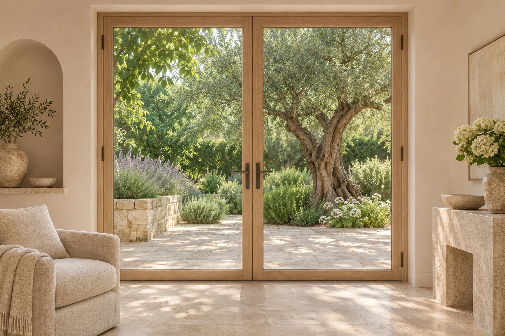
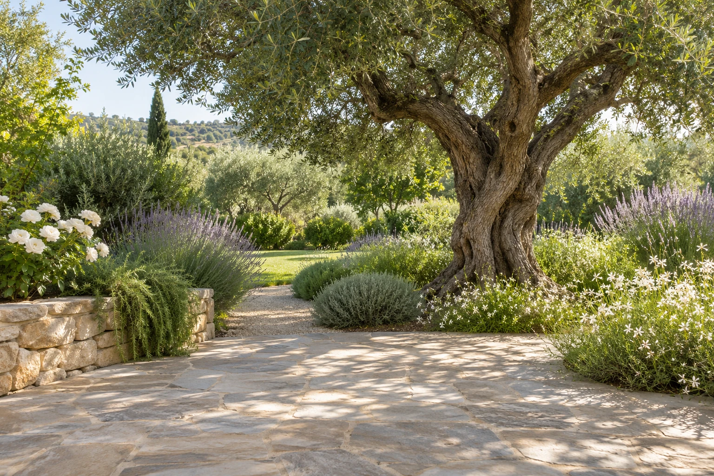

Új építéshez.
Mondd el, milyen nyílásokkal, méretekkel és kialakítással tervezel. A kivitelezési lehetőségekről az épület és az igényeid alapján érdeklődhetsz.
Megírom az elképzelésem ↗Nyílászáró rendszerek kivitelezése.
Egy új nézőpont az otthonodhoz, a részletekkel kezdve.

Új építéshez vagy felújításhoz keresel nyílászárós megoldást? Az elképzelésed, az épület adottságai és a kivitelezés részletei együtt adják a kiindulópontot.
Az elérhető rendszereket és a vállalható munkát a konkrét feladat alapján egyeztessük.
Mondd el, milyen nyílásokkal, méretekkel és kialakítással tervezel. A kivitelezési lehetőségekről az épület és az igényeid alapján érdeklődhetsz.
Megírom az elképzelésem ↗Felújítást tervezel? A jelenlegi kialakítás, a méretek és a kívánt változtatás segítenek tisztázni a következő lépést.
Felújításról egyeztetek ↗A jó kiindulóponthoz néhány adat és egy beszélgetés is sokat segít.
Új építés vagy felújítás? Mondd el a helyszínt és az elképzelést. E-mailben fotókat és terveket is csatolhatsz.
A méreteket, a kialakítást és a helyszíni egyeztetés lehetőségét a konkrét munkához tisztázzuk.
A műszaki tartalmat, az árat és az időzítést egyeztessük, mielőtt elkezdődik a kivitelezés.
Görgess tovább.
Az ablak két szárnya a mozdulatoddal nyílik ki.

Feladat és időpont egyeztetése.
Írd meg az elképzelésedet.
Indulás előtt egyeztess telefonon.